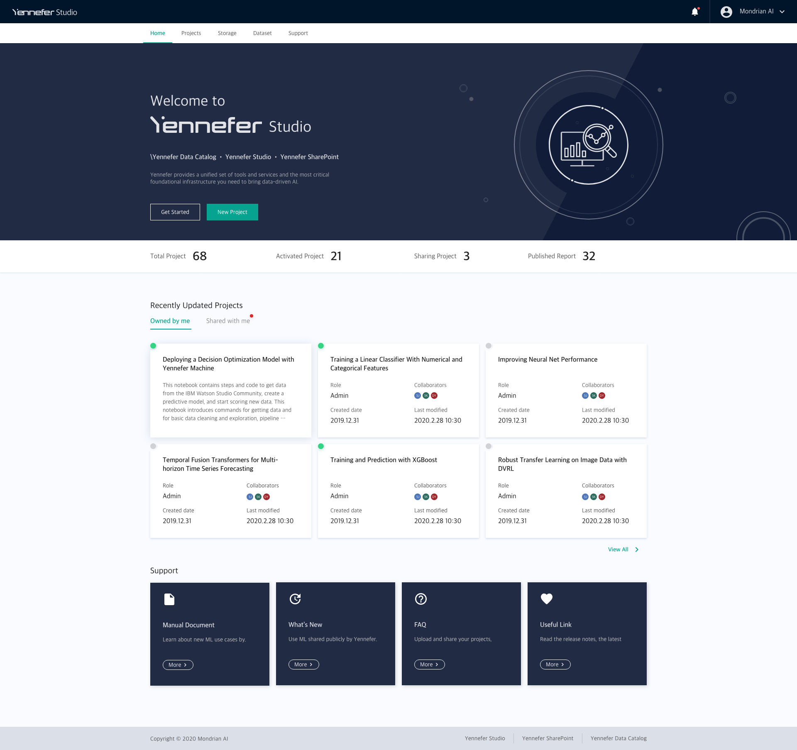
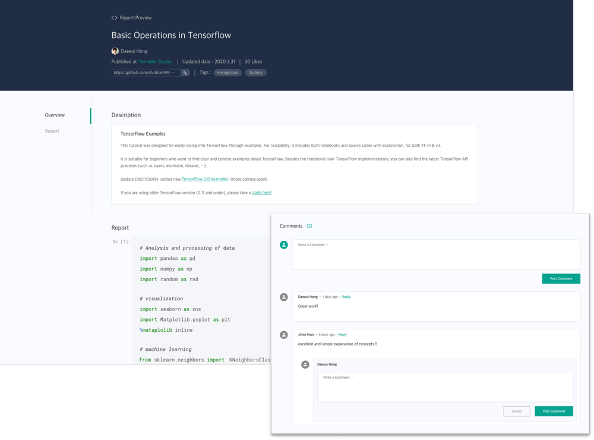

As the founding and only designer, I led 0→1 UX for Yennefer Suite, a 5-in-1 enterprise AI platform for running AI search across massive datasets and managing an organization's AI projects. I owned the entire experience from research to launch, and built the design system, UX foundations, and brand identity from nothing.
Adopted across nine enterprise organizations, including Samsung Display, KT Telecom, and Hyundai.
Contributed to 300% company revenue growth over the period.

AI researchers were stuck with irrelevant, un-personalized results, overwhelming information, and no easy way to manage limited computing resources. I unified the workflow into one place, from finding data to running research to managing resources.
A single home where teams scan every AI project's status at a glance.
Fast, organized access to the data behind every project.
A focused workspace for building and running AI research.
Clear visualization of computing resources, so teams manage limited capacity with confidence.
A shared space that keeps sources and documentation in one place, with published reports and inline discussion.

For the computing-resource dashboard I explored three chart layouts and tested them against real use. The winning direction aligned data with its charts, used a wider chart for scannable history, and followed an F-pattern reading flow, so researchers could read resource status at a glance instead of decoding it.
As the sole designer I created the design system, UX foundations, and brand identity, so a small team could ship a consistent product fast.
Building this 0→1, alone, taught me to hold the whole product in my head: the system, the brand, and the one researcher trying to get their work done.
Soojin Hwang · Founding designer